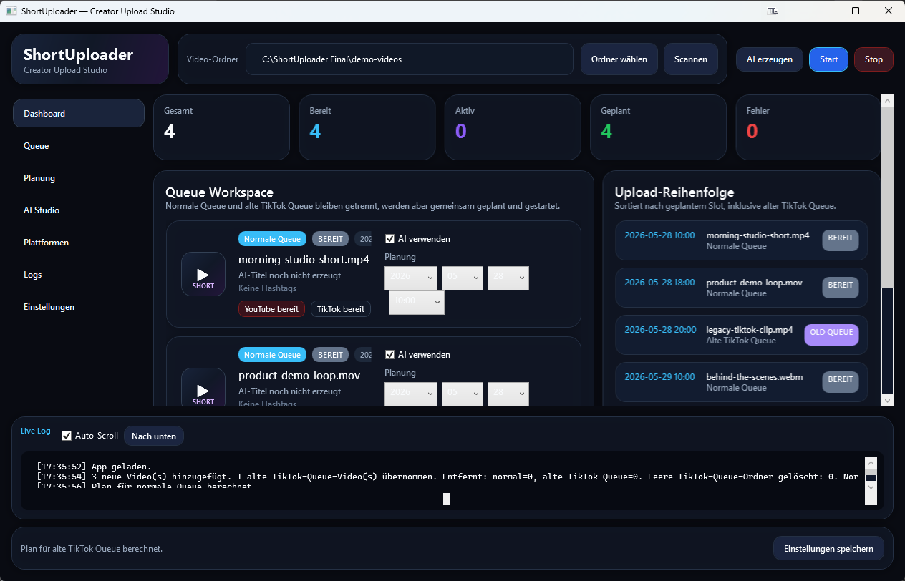
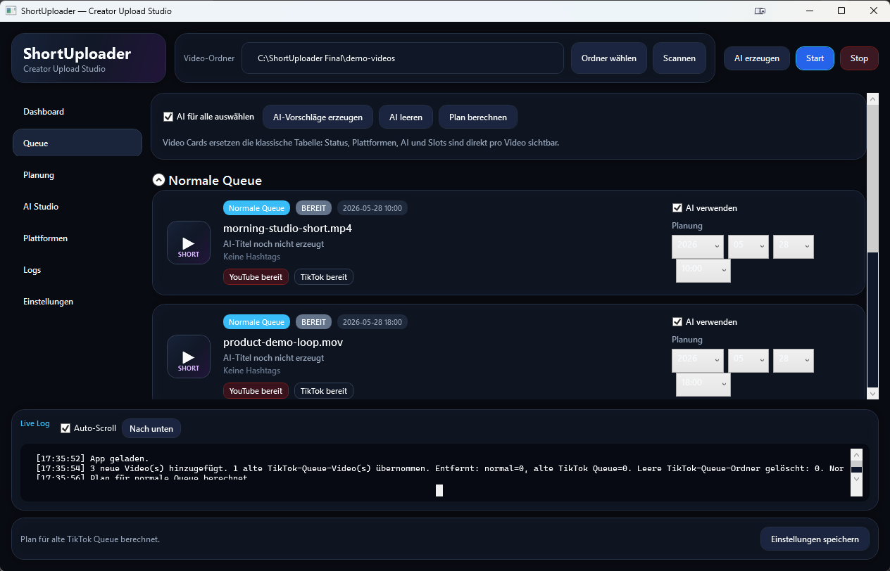
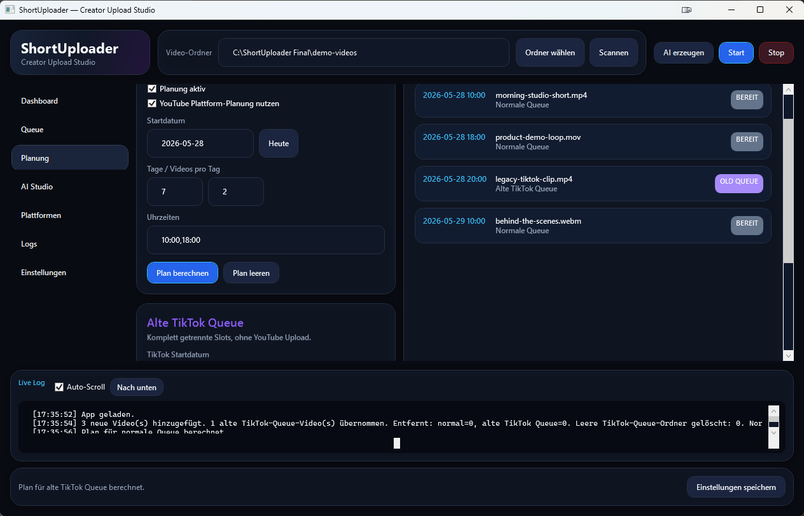
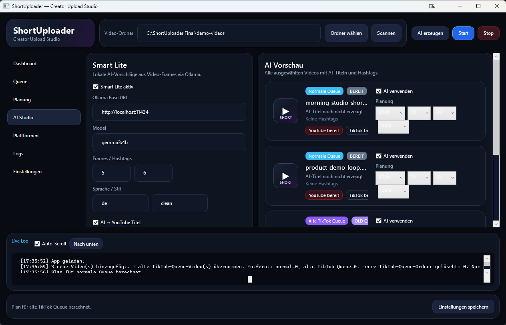
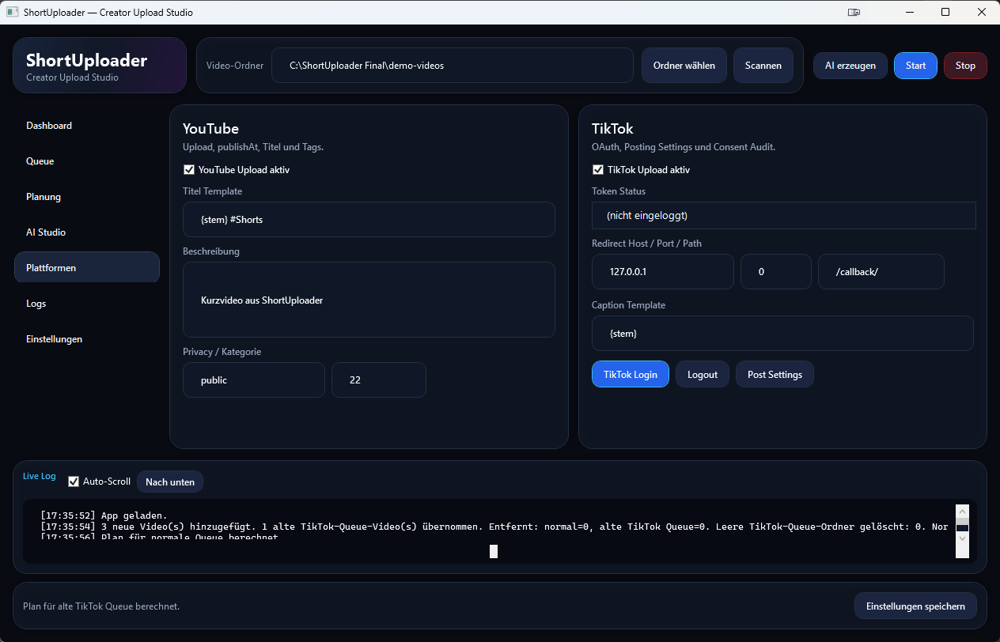
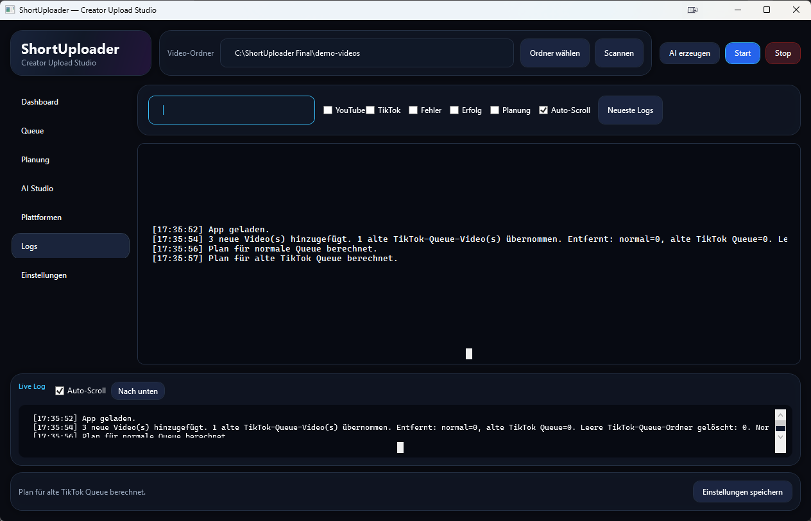
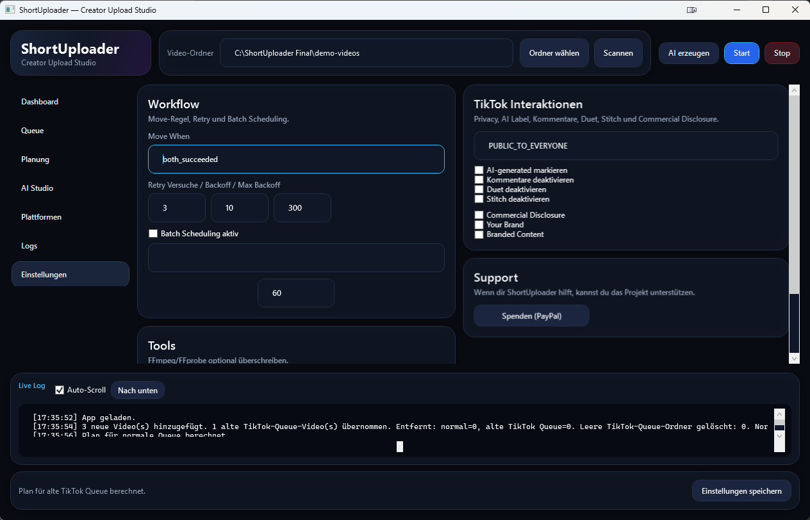

Video-Ordner wählen
Wähle den Ordner mit deinen .mp4, .mov oder .webm Dateien und klicke auf Scannen.
Tutorial / Info
Diese Seite zeigt den typischen Ablauf in der Desktop-App und erklärt die wichtigsten Bereiche: Dashboard, Queue, Planung, AI Studio, Plattformen, Logs und Einstellungen.

Der Grundablauf ist in vier Schritten erledigt. Plattform-Logins und API-Rechte müssen vorher korrekt eingerichtet sein.
Wähle den Ordner mit deinen .mp4, .mov oder .webm Dateien und klicke auf Scannen.
Kontrolliere normale Queue und alte TikTok Queue, AI-Haken, Status und vorhandene Slots.
Berechne Upload-Slots und erzeuge optional lokale Titel-, Hashtag- und Caption-Vorschläge.
Starte den Lauf, bestätige TikTok-Consent und prüfe anschließend Status, Ergebnis und Logs.
Die Screenshots stammen aus einem isolierten Demo-Zustand der lokalen App und enthalten keine echten Accountdaten.
Das Dashboard ist die zentrale Übersicht. Es zeigt Gesamtzahl, bereite Videos, aktive Uploads, geplante Slots und Fehler. Darunter siehst du Queue Workspace und Upload-Reihenfolge zusammen.

Im Queue-Bereich steuerst du einzelne Videos. Pro Karte sind Datei, Status, YouTube-Ergebnis, TikTok-Ergebnis, AI-Auswahl und Planung direkt sichtbar.

Die Planung verteilt Videos auf Slots. Für YouTube kann die Plattform-Planung genutzt werden, TikTok arbeitet mit internen Upload-Zeitfenstern.

Smart Lite nutzt lokal extrahierte Video-Frames und Ollama, um Titel, Hashtags und Captions vorzuschlagen. Die Vorschläge können automatisch auf YouTube und TikTok angewendet werden.

Hier stellst du YouTube und TikTok ein. YouTube nutzt Titel-, Beschreibungs- und Tag-Vorlagen. TikTok verwaltet OAuth, Caption-Template und Post Settings.

Die Log-Ansicht hilft beim Nachvollziehen jedes Laufs. Du kannst nach Text suchen und Einträge nach YouTube, TikTok, Fehler, Erfolg oder Planung filtern.

In den Einstellungen werden Workflow-Regeln, Retry/Backoff, Batch Scheduling, Tool-Pfade und TikTok-Interaktionen gesetzt.
Wichtig
Du bist für deine Inhalte und die Einhaltung der jeweiligen Plattformregeln verantwortlich. ShortUploader nutzt offizielle Schnittstellen und ist nicht mit TikTok, ByteDance, YouTube oder anderen Plattformen verbunden.